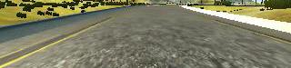
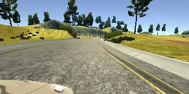
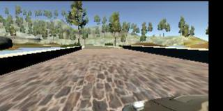

The goals / steps of this project are the following:
* Use the simulator to collect data of good driving behavior.
* Build, a convolution neural network in Keras that predicts steering angles from images.
* Train and validate the model with a training and validation set.
* Test that the model successfully drives around track one without leaving the road.
* Summarize the results with a written report.
In this project, I used the default images provided for training as my data set. I used the NVIDIA model, as it's supposed to work well in this situation.
Training data was chosen to keep the vehicle driving on the road. I used a combination of center lane driving, recovering from the left and right sides of the road.
For details about how I created the training data, see the next section.
The images are cropped so that the model won’t be trained with the sky and the car front parts, here is an example of a cropped image (60:25):

I used the following augumentation technique to generate unlimited number of images:
Randomly flip image left/right, here is an example of a flipped image

Randomly choose left, right or center images.
Randomly altering image brightness (lighter or darker), here is an example of a an image with reduced brightness:

I splitted the images into train and validation set in order to measure the performance at every epoch. Testing was done using the simulator.
My project includes the following files:.
- model.py containing the script to create and train the model.
- drive.py for driving the car in autonomous mode.
- model.h5 containing a trained convolution neural network
- writeup_report.md summarizing the results.
- preprocess.py, helper functions for model.py
My model consists of a convolution neural network with 3x3 filter sizes and depths between 32 and 128 (model.py lines 18-24)
The model includes RELU layers to introduce nonlinearity (code line 20).
The model contains dropout layers in order to reduce overfitting (model.py lines 22).
The model was trained and validated on different data sets to ensure that the model was not overfitting (code line 32-37). The model was tested by running it through the simulator and ensuring that the vehicle could stay on the track.
The model used an adam optimizer, so the learning rate was not tuned manually (model.py line 39).
The design of the network is based on the NVIDIA model.
I've added the following adjustments to the model.
The model can drive the course without bumping into the side ways.
NVIDIA: Self Driving Car